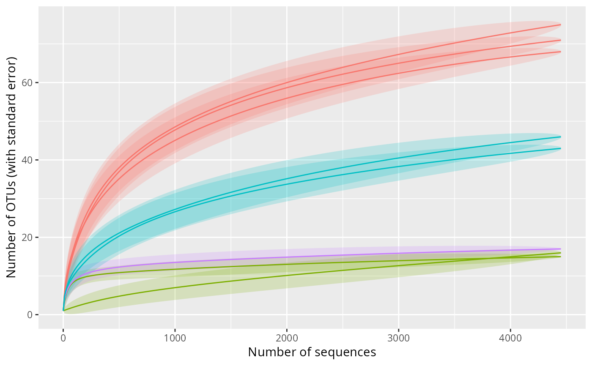
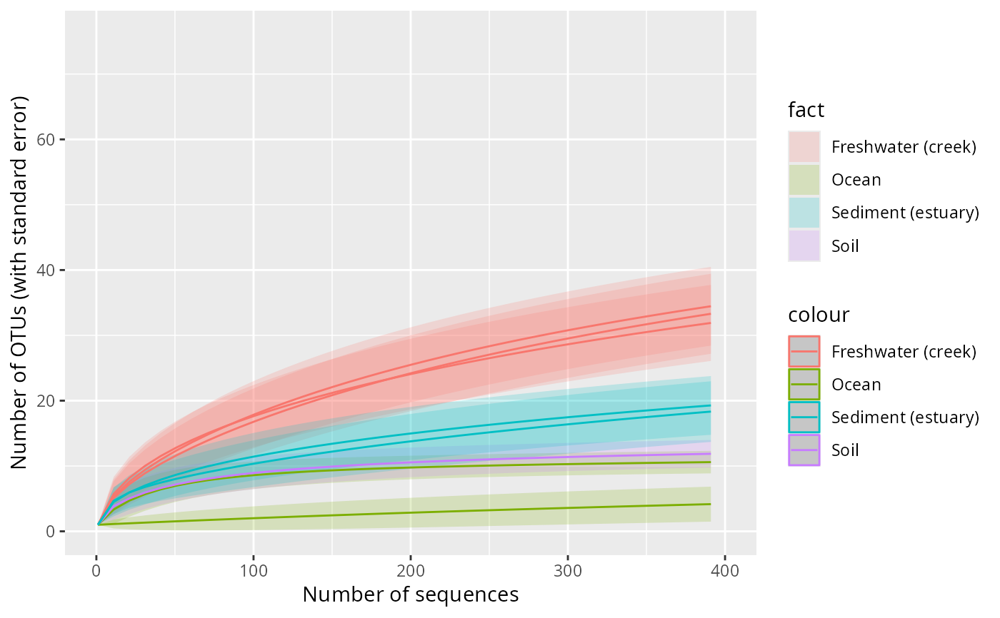

Note that as most bioinformatic pipeline discard singleton, accumulation curves from metabarcoding cannot be interpreted in the same way as with conventional biodiversity sampling techniques.
Usage
accu_plot(
physeq,
fact = NULL,
add_nb_seq = TRUE,
step = NULL,
by.fact = FALSE,
ci_col = NULL,
col = NULL,
lwd = 3,
leg = TRUE,
print_sam_names = FALSE,
ci = 2,
...
)Arguments
- physeq
(required): a
phyloseq-classobject obtained using thephyloseqpackage.- fact
(required) Name of the factor in
physeq@sam_dataused to plot different lines- add_nb_seq
(default: TRUE, logical) Either plot accumulation curves using sequences or using samples
- step
(Integer) distance among points calculated to plot lines. A low value give better plot but is more time consuming. Only used if
add_nb_seq= TRUE.- by.fact
(default: FALSE, logical) First merge the OTU table by factor to plot only one line by factor
- ci_col
Color vector for confidence interval. Only use if
add_nb_seq= FALSE. Ifadd_nb_seq= TRUE, you can use ggplot to modify the plot.- col
Color vector for lines. Only use if
add_nb_seq= FALSE. Ifadd_nb_seq= TRUE, you can use ggplot to modify the plot.- lwd
(default: 3) thickness for lines. Only use if
add_nb_seq= FALSE.- leg
(default: TRUE, logical) Plot legend or not. Only use if
add_nb_seq= FALSE.- print_sam_names
(default: FALSE, logical) Print samples names or not? Only use if
add_nb_seq= TRUE.- ci
(default: 2, integer) Confidence interval value used to multiply the standard error to plot confidence interval
- ...
Additional arguments passed on to
ggplotifadd_nb_seq= TRUE or toplotifadd_nb_seq= FALSE
Value
A ggplot2 plot representing the richness
accumulation plot if add_nb_seq = TRUE, else, if add_nb_seq = FALSE
return a base plot.
Examples
# \donttest{
data("GlobalPatterns", package = "phyloseq")
GP <- subset_taxa(GlobalPatterns, GlobalPatterns@tax_table[, 1] == "Archaea")
#> Found more than one class "phylo" in cache; using the first, from namespace 'phyloseq'
#> Also defined by ‘RNeXML’
#> Found more than one class "phylo" in cache; using the first, from namespace 'phyloseq'
#> Also defined by ‘RNeXML’
#> Found more than one class "phylo" in cache; using the first, from namespace 'phyloseq'
#> Also defined by ‘RNeXML’
#> Found more than one class "phylo" in cache; using the first, from namespace 'phyloseq'
#> Also defined by ‘RNeXML’
#> Found more than one class "phylo" in cache; using the first, from namespace 'phyloseq'
#> Also defined by ‘RNeXML’
#> Found more than one class "phylo" in cache; using the first, from namespace 'phyloseq'
#> Also defined by ‘RNeXML’
#> Found more than one class "phylo" in cache; using the first, from namespace 'phyloseq'
#> Also defined by ‘RNeXML’
GP <- rarefy_even_depth(subset_samples_pq(GP, sample_sums(GP) > 3000))
#> You set `rngseed` to FALSE. Make sure you've set & recorded
#> the random seed of your session for reproducibility.
#> See `?set.seed`
#> ...
#> Found more than one class "phylo" in cache; using the first, from namespace 'phyloseq'
#> Also defined by ‘RNeXML’
#> Found more than one class "phylo" in cache; using the first, from namespace 'phyloseq'
#> Also defined by ‘RNeXML’
#> Found more than one class "phylo" in cache; using the first, from namespace 'phyloseq'
#> Also defined by ‘RNeXML’
#> Found more than one class "phylo" in cache; using the first, from namespace 'phyloseq'
#> Also defined by ‘RNeXML’
#> Found more than one class "phylo" in cache; using the first, from namespace 'phyloseq'
#> Also defined by ‘RNeXML’
#> Found more than one class "phylo" in cache; using the first, from namespace 'phyloseq'
#> Also defined by ‘RNeXML’
#> Found more than one class "phylo" in cache; using the first, from namespace 'phyloseq'
#> Also defined by ‘RNeXML’
#> Found more than one class "phylo" in cache; using the first, from namespace 'phyloseq'
#> Also defined by ‘RNeXML’
#> 63OTUs were removed because they are no longer
#> present in any sample after random subsampling
#> ...
#> Found more than one class "phylo" in cache; using the first, from namespace 'phyloseq'
#> Also defined by ‘RNeXML’
p <- accu_plot(GP, "SampleType", add_nb_seq = TRUE, by.fact = TRUE, step = 10)
p <- accu_plot(GP, "SampleType", add_nb_seq = TRUE, step = 10)
#> Warning: no non-missing arguments to max; returning -Inf
p + theme(legend.position = "none")
#> Warning: Removed 8 rows containing missing values or values outside the scale range
#> (`geom_line()`).

p + xlim(c(0, 400))
#> Warning: Removed 3256 rows containing missing values or values outside the scale range
#> (`geom_line()`).

# }